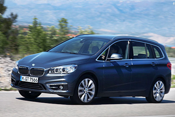

旅行是生活之必須，探索世界是人生的目的。相信很多人都曾想過放逐自己，或許在某一天你突然決定給自己放個假，拋下一切，奔向沒有人認識你的地方，靜靜地享受整趟旅程，活在當下、不做他想。到時候你會希望陪伴你的，就是BMW 3 Series Gran Turismo。
Gran Turismo車型介於4門房車與5門旅行車之間，設計上兼具跑格與旅行，而賦予Gran Turismo跑格的元素，來自於許多經典跑車都採用的Fast Back快背車設計，這種設計特徵就是車頂線條在過了B柱之後，會直接往車尾向下收束，例如1975年Lamborghini Miura SV或是電影「回到未來」當中的1981年DeLorean DMC-12。
外觀微幅調整，前後燈組及後霧燈位置修改
新年式的 3 Series Gran Turismo在外觀上與前一代幾乎沒有分別，最大的差異僅在LED頭燈的導入，以及將燈條的位置調整，讓環形光條顯得更具霸氣。
此外，尾燈組的排列也有所不同，除了光條由原本簡單的橫式排列，變更成更具幾何美感的多邊形排列之外，倒車燈位置也往下移。340i Gran Turismo標配的輪胎規格是 前225/50 R18，後255/45 R18，不過本次試駕，BMW臺灣總代理汎德則是換上了M款雙輻式598型鋁圈，尺寸前225/45 R19，後255/40 R19，選配價6.3萬元。
內裝以鋁質飾板創造科技感
內裝部份與前一代幾乎相同，車室空間由鋁質格紋飾板搭配藍色飾條，創造高科技感受，真皮包覆的多功能方向盤附換檔撥片，可以進行音響控制及定速。全車採用Dakota真皮內裝，在觸感上比Nappa真皮硬一些，不過摩擦力表現不錯，搭配駕駛座兩側夾緊功能，可以讓駕駛專心面對路況，而不用一直找支點支撐亂甩的身體。
方向盤附4向手動調整，無論是皮質的摩擦力、方向盤粗細或是直徑都很平衡。在筆者試駕過程中，有一段行程需要多次迴轉，在快打方向盤迴轉的時候其實相當順暢。總括來說，這輛340i Gran Turismo的內裝，讓駕駛相當安心，只需要專心面對車外的一切就好。

再來談到後座乘坐品質，頭部空間因為GT車型的外觀設計，是顯得稍微侷促一些，但是不需要把它與Wagon或是SUV做比較，畢竟在先天設定上車型就完全不同。同理，筆者認為雖然近年Wagon已經設計的相當好看，但仍然無法超越這類GT車型，所以在GT的美型設計及後座的空間表現之間如何做比較，仍然端看消費者的選擇。
不過，後座膝部空間表現倒是相當好，3 Series GT軸距長達2,920mm，比一般轎車款3 Series的軸距2,810mm還要長上110mm，這110mm的差距就完全反應在膝部空間上。此外，行李箱容積當然也是Gran Turismo的重點，除了尾門開啟相當方便之外，搭配後座4/2/4分離傾倒，可以依需求創造不同的車室空間，最多可以釋出1,600公升的行李廂容積。
新年式改款重點，導入iDrive 5.0搭配Connected Drive系統
首先iDrive 5.0最大的特徵就是改為圖像式介面，讓駕駛操作時更為直覺，減少目光離開道路的時間。功能上則加入了ConnectedDrive互連駕駛系統，每輛車皆配有一張獨立sim卡，讓車輛保持連網狀態，進而提供各項服務。其中旅程資訊、道路救援、客服中心及服務廠資訊是終身免費提供，其餘連網服務則提供3年免費使用。
旅程資訊服務非常特別，透過網路電話連接至中國的客服中心，任何旅程方面的問題都可以問他。試駕當日筆者也有嘗試通話，發現接通的速度相當快，對方客服的一口京片子也很有禮貌，很可惜當日礙於時間因素，並沒有跟對方客服深入詳聊，這部分消費者可以至展間試駕時親自體驗。
此外，iDrive內建多款APP，包括天氣、維基百科、Spotify甚至Flicker相簿，其中另一個重要功能Send to Phone，可以把當前車輛位置透過Mail或是簡訊送達指定位置，另外，未來車主若整合手機上的My BMW Remote，除了可以透過手機APP掌握車輛位置之外，車主可以下載多個控制功能，進而遠端操作車輛的一些功能，例如車內的溫度調節、車門上鎖和解鎖，或者是操作喇叭和訊號燈。
說得更簡單一點，就是BMW ConnectedDrive未來的發展趨勢，就像是未來你的愛車會如同智慧型手機一般，能提供科技化的豐富服務內容。

行車模式共分4種，分別是「ECO PRO」、「COMFORT」、「SPORT」及「SPORT plus」。透過「ECO PRO」模式，車輛會根據駕駛行為進行分析，提升節能效率，一般行路使用此模式可以達到最省油的效果，而且並不會因為身處「ECO PRO」行車模式，就懶洋洋的沒有動力。在油門踏板前3分之1是相當溫馴，但是一踩過這個界限，動力馬上湧現。從時速40至50公里開始再加速，依然貼背，而這仍然是「ECO PRO」模式。
「COMFORT」則是平衡模式，油門的反應比「ECO PRO」再靈敏一些，但是不若「SPORT」兇猛；若切換到「SPORT」模式，可以立刻發現方向盤變重，油門變得非常敏感，而動力也完全準備好隨時爆發，就像蓄勢待發的眼鏡蛇、可以隨時攻擊；而最後的「SPORT plus」模式則會將ESP取消，交出完全的車輛掌控權。
3.0升直列6缸汽油引擎，最大馬力326匹
340i Gran Turismo取代原先335i Gran Turismo，車系汽油車型頂級戰力的位置，以代號B58的3.0升直列6缸汽油引擎，取代原先335i所配置的動力單元，最大馬力數據也提升至326匹的水準， 由靜止加速到時速100公里只要5.1秒，極速可達時速250公里，搭配8速Steptronic手自排變速箱，不管是起步還是中後段的加速都相當流暢。
本次試駕的340i Gran Turismo搭配M款跑車化套件，其懸吊及制動皆有優化。
在進彎前的煞車靠著前4後2的活塞讓整個煞車行程相當線性，前懸吊在阻尼的設定上算硬朗，點頭的情形並不嚴重；在彎中拜良好的車體剛性之賜，車身相當穩定，不用一直修正方向盤；出彎後的車身回正也相當快速而確實，並沒有左右搖擺的情形出現，一回神已經準備面對下一個彎道了。減速、轉向然後加速出彎，所有動作一氣呵成，只要控制得宜，也能讓後座乘客睡得香甜。
筆者認為，3 Series Gran Turismo真的是一個人放逐自我的好選擇，它的行李廂剛剛好放的下你流浪的家當、不會過小而遺漏了什麼，也不會過大而顯得寂寞；它的動力適合一個人享受，再多一位副駕就無福消受；它的外型既是跑車、也是旅行車，我想，這就是Gran Turimo的迷人之處。
-

享60期0利率、低月付，BMW「榮耀創新專案」11月加碼實施中
BMW總代理汎德表示，11月份持續加碼實施2017年式BMW車型「榮耀創新專案」，凡11月交車領牌者另享特定車型優惠價格升級駕駛輔助套件、盲點偵測警示等配備...
-

超越入門表現，BMW 218i Active Tourer直購直測
新入手的218i Active Tourer，與B 180在品牌造車理念迥異下，呈現出截然不同的產品特質。藉由U-CAR「直購直測」單元，與讀者們分享購入BMW 218i Active Tourer後的使用體驗...
-

戰力升級，2017年式BMW多數標配「智慧互聯駕駛服務」與iDrive 5.0介面
BMW總代理汎德公司於2016年9月26日公佈2017年式車型配備價格調整，主要將多數車型標準配備「BMW全功能智慧互聯駕駛服務」、並升級為「iDrive 5.0使用介面」...
-

不想承認也不行─BMW 2 Series Gran Tourer斯洛維尼亞試駕
在這趟試駕2 Series Gran Tourer的過程中，我實在很不想承認BMW也能將前驅車調校至如此境界，在這輛已達7人座設定的小型MPV，BMW仍讓駕駛手感直搗心窩，方向盤所能傳遞路感還是熟悉的BMW風味...
-

找回生命原動力，BMW 120i Sport Line試駕體驗
儘管時時刻刻提醒自己要越活越年輕，持續找到生命原動力，然而陷入框架的輪迴也同時身、心漸漸遲鈍，好在因緣際會下接觸到 BMW 120i Sport Line，地道的BMW好滋味，讓心中生命光火，再次點亮...
-

調整配備139萬起入手、價格戰開打，BMW 118i與218i AT都會特式推出
BMW總代理汎德汽車於9月中旬，分別針對麾下118i以及218i Active Tourer，推出了名為都會版的特式車，此一特式版本主要是在配備上做出調整，同時價格也較一般常販版本調降許多...
-

放逐自己的旅程-2017 BMW 340i Gran Turismo M Sport 試駕報告
探索世界是人生的目的。相信很多人都曾想過放逐自己，或許在某一天你突然決定給自己放個假，到時候你會希望陪伴你的，就是BMW 3 Series Gran Turismo...
-

只做最強，BMW3系列運動房車
以駕駛樂趣風靡於車壇的BMW 3 Series，在每一回的世代更迭都帶給人無限驚喜。輔以全新設計的流體力學前、後進氣壩，讓3 Series顯得更有精神...
-

率性的優雅─BMW 420i Gran Coupé Luxury Line試駕體驗
BMW 取其經典車系6 Series之名，推出了6 Series Gran Coupé，擁有品牌旗艦7 Series的大器身段，卻又具備6 Series 雙門Coupé的瀟灑、帥氣，組合成線條絕美的四門跑房車...
-

BMW 3 Series Gran Turismo車款介紹
BMW 3 Series Gran Turismo小改款與3 Series其他成員相同，外觀與內裝都僅進行了小幅度的修改，重點同樣集中在動力單元更替，同時車名也因應動力數據而進行調整...
c2016 MediaBrilliance System Corporation. All Rights Reserved.